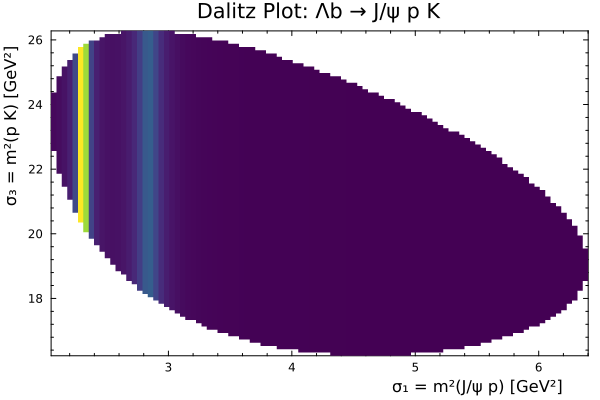
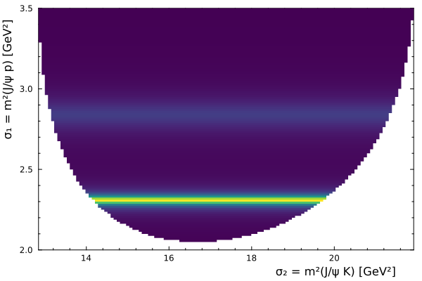
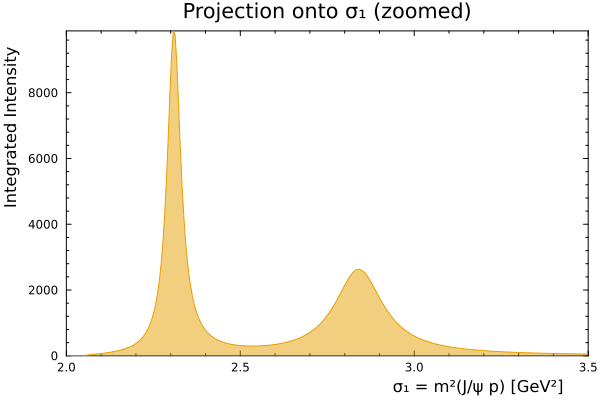
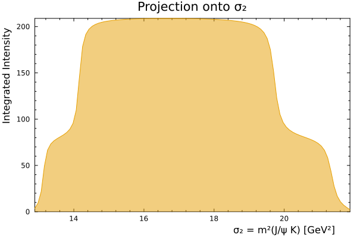
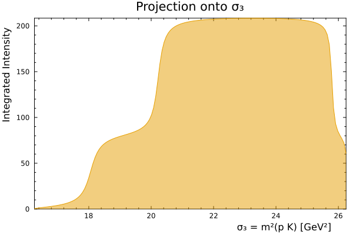
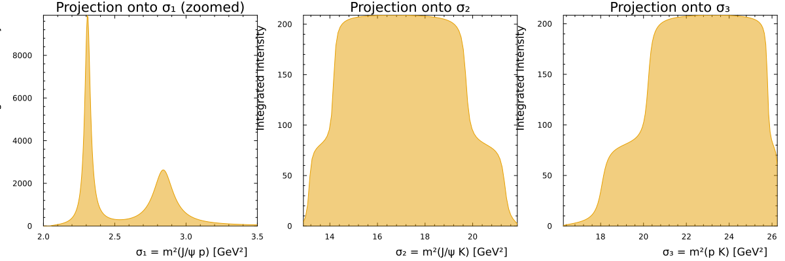

Visualization Tutorial
This tutorial demonstrates how to visualize three-body decay models using Dalitz plots and Dalitz plot projections. We'll use the same Λb ⟶ J/ψ p K decay example from the main tutorial.
using ThreeBodyDecays
using Plots
using QuadGKtheme(
:wong,
frame = :box,
lab = "",
minorticks = true,
guidefontvalign = :top,
guidefonthalign = :right,
xlim = (:auto, :auto),
ylim = (:auto, :auto),
grid = false,
);Setting up Kinematics
First, let's define the masses and spin of particles:
ms = ThreeBodyMasses(3.09, 0.938, 0.49367; m0 = 5.62);
tbs = ThreeBodySystem(; ms, two_js = ThreeBodySpins(2, 1, 0; two_h0 = 1));Phase Space Boundaries
You can also visualize the phase space boundaries:
plot(
border31(ms),
xlab = "σ₃ [GeV²]",
ylab = "σ₁ [GeV²]",
title = "Phase Space Boundary",
aspect_ratio = 1,
);The dalitzplot and dalitzprojection recipes provide a flexible way to visualize three-body decay models. The key parameters are:
For dalitzplot:
iσx,iσy: Choose which invariants to plot (1, 2, or 3)xbins,ybins: Resolution of the plotxlims,ylims: Custom axis limits (use:autofor automatic)
For dalitzprojection:
- First arguments: Mass tuple and intensity function
- Last argument: Integration function (e.g.,
quadgkfrom QuadGK.jl) k: Which invariant to project onto (1, 2, or 3)bins: Number of bins in the projectionxlims: Custom axis limits (use:autofor automatic)
Setting up the model
For a simple model, we will use a Breit-Wigner lineshape:
struct BW
m::Float64
Γ::Float64
end
(bw::BW)(σ::Number) = 1 / (bw.m^2 - σ - 1im * bw.m * bw.Γ);Create decay chains for Lambda resonances:
parities, needed only to identify available couplings
Ps = ThreeBodyParities('-', '+', '-'; P0 = '+');
const model = ThreeBodyDecay(
["Λ1520", "Λ1690"] .=> zip(
[1.0, 1.5],
[
DecayChainLS(; k = 1, Xlineshape = BW(1.5195, 0.0156), jp = jp"3/2+", Ps, tbs),
DecayChainLS(; k = 1, Xlineshape = BW(1.685, 0.050), jp = jp"1/2+", Ps, tbs),
],
),
);Dalitz Plot Visualization
The Dalitz plot shows the intensity distribution across the phase space. We can create a Dalitz plot using the dalitzplot recipe:
dalitzplot(
masses(model),
Base.Fix1(unpolarized_intensity, model);
iσx = 1,
iσy = 3,
xbins = 100,
ybins = 100,
xlab = "σ₁ = m²(J/ψ p) [GeV²]",
ylab = "σ₃ = m²(p K) [GeV²]",
title = "Dalitz Plot: Λb → J/ψ p K",
)
You can also specify custom limits:
dalitzplot(
masses(model),
Base.Fix1(unpolarized_intensity, model);
iσx = 2,
iσy = 1,
ylims = (2.0, 3.5),
xbins = 120,
ybins = 120,
xlab = "σ₂ = m²(J/ψ K) [GeV²]",
ylab = "σ₁ = m²(J/ψ p) [GeV²]",
)
Dalitz Plot Projections
Projections are 1D plots obtained by integrating the Dalitz plot intensity over one invariant mass coordinate. This is useful for visualizing features that may be clearer in 1D.
Project onto σ₁ (m²(J/ψ p)):
p1 = dalitzprojection(
masses(model),
Base.Fix1(unpolarized_intensity, model),
quadgk;
k = 1,
bins = 300,
xlims = (2.0, 3.5),
fill = true,
fillalpha = 0.5,
xlab = "σ₁ = m²(J/ψ p) [GeV²]",
ylab = "Integrated Intensity",
title = "Projection onto σ₁ (zoomed)",
)
Project onto σ₂ (m²(J/ψ K)):
p2 = dalitzprojection(
masses(model),
Base.Fix1(unpolarized_intensity, model),
quadgk;
k = 2,
bins = 100,
fill = true,
fillalpha = 0.5,
xlab = "σ₂ = m²(J/ψ K) [GeV²]",
ylab = "Integrated Intensity",
title = "Projection onto σ₂",
)
Project onto σ₃ (m²(p K)) with custom limits:
p3 = dalitzprojection(
masses(model),
Base.Fix1(unpolarized_intensity, model),
quadgk;
k = 3,
fill = true,
fillalpha = 0.5,
bins = 150,
xlab = "σ₃ = m²(p K) [GeV²]",
ylab = "Integrated Intensity",
title = "Projection onto σ₃",
)
Comparing Multiple Projections
You can compare projections from different models or resonances:
plot(
p1,
p2,
p3,
layout = (1, 3),
size = (1200, 400),
bottom_margin = 6Plots.PlotMeasures.mm,
)
This page was generated using Literate.jl.